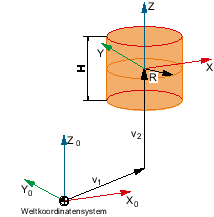

You can specify the dimensions and position as well as values for the display and collision monitoring of a cylindrical protection area element in the "Cylinder" window.

V1 | Sum of the offset and rotation between this element and the root element. |
V2 | Offsets and rotation from the parameters of this element. |
Display in the tree topology
| | Cylinder-shaped protection area elements are identified by this symbol in the tree topology. |
Element values
Parameter | Meaning |
|---|
Name | Designation, which is displayed in the tree structure. |
Color  | Selection of the color for the protection area element. Activate the checkbox "from protection area", if the color of the associated tool and/or machine protection area should be applied. Deactivate the checkbox "from protection area" in order to select any color. Select the required color from the selection list.
|
Detail level | Defines from which detail level the protection area or the protection area elements are displayed on the user interface. Activate the checkbox "from protection area", if the detail level of the associated tool and/or machine protection area should be applied. Deactivate the check box "from protection area", if you wish to define your own detail level for the element. Enter the desired level of detail: Lowest detail level: 0 Highest detail level: 3
|
Use | Display The protection area element is shown in the graphic view. The element is only visible if the "Display model" softkey is active. The element is not monitored for collision. Monitoring The protection area element is used for the collision avoidance. The element is only visible if the "Monit. model" softkey is active. Display + monitoring The protection area element is used for display in the graphic view and for collision avoidance. The element is visible in both display versions.
|
Height (Z) | Height of the cylinder in the
Z direction. |
Radius | Specification of the radius |
Offset (X) | X component of the direction vector. |
Offset (Y) | Y component of the direction vector. |
Offset (Z) | Z component of the direction vector. |
Rotary axis (X) | X component of the rotation vector. |
Rotary axis (Y) | Y component of the rotation vector. |
Rotary axis (Z) | Z component of the rotation vector. |
Angle of rotation | The value by which the system rotates around the rotation vector. |